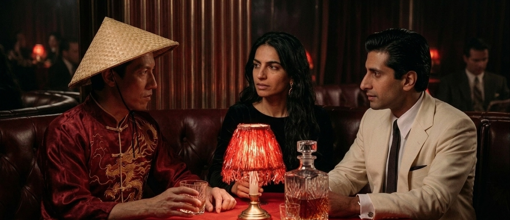
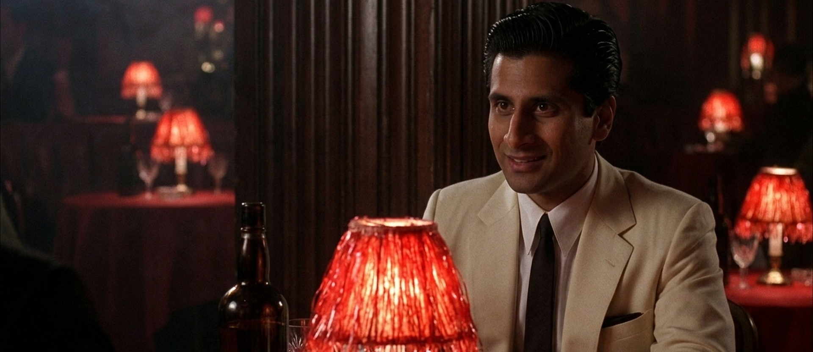
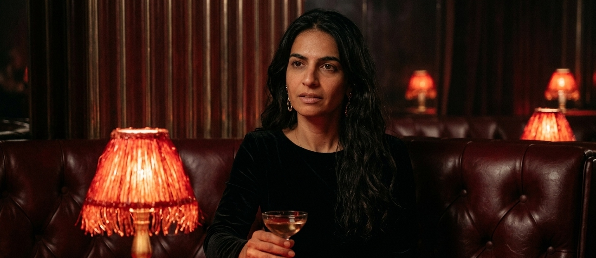
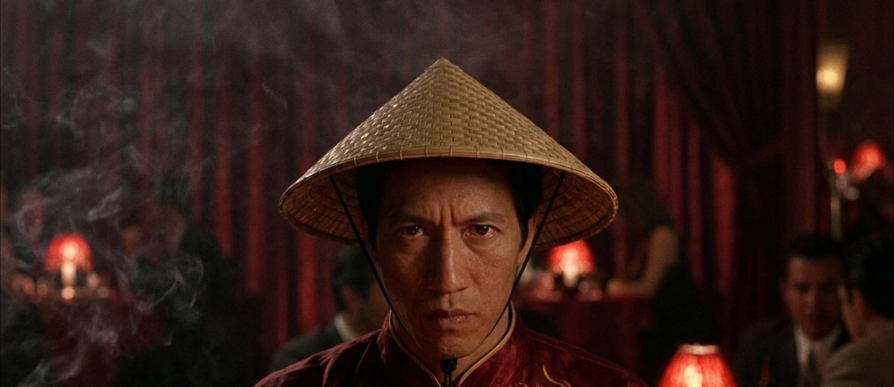
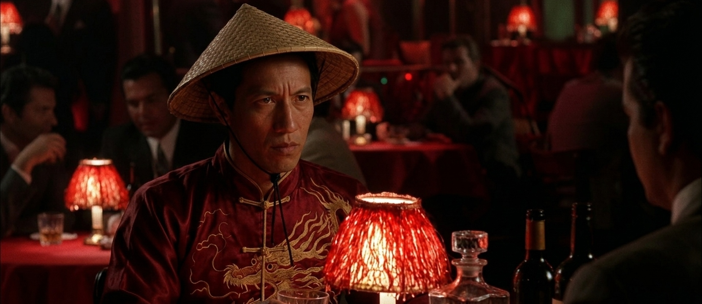
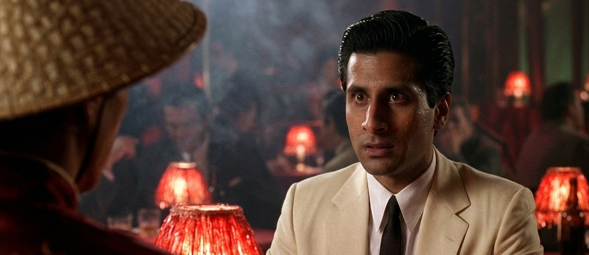
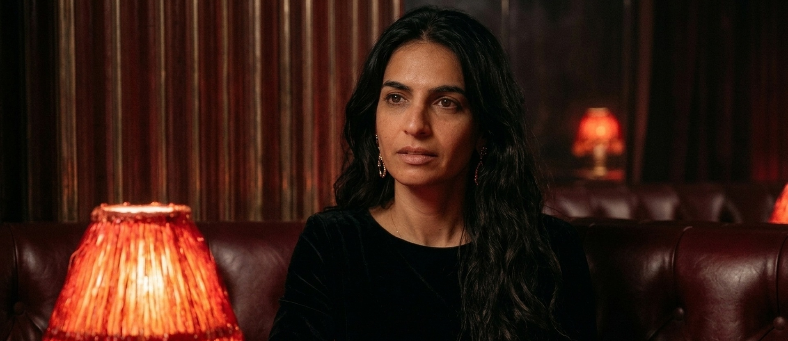
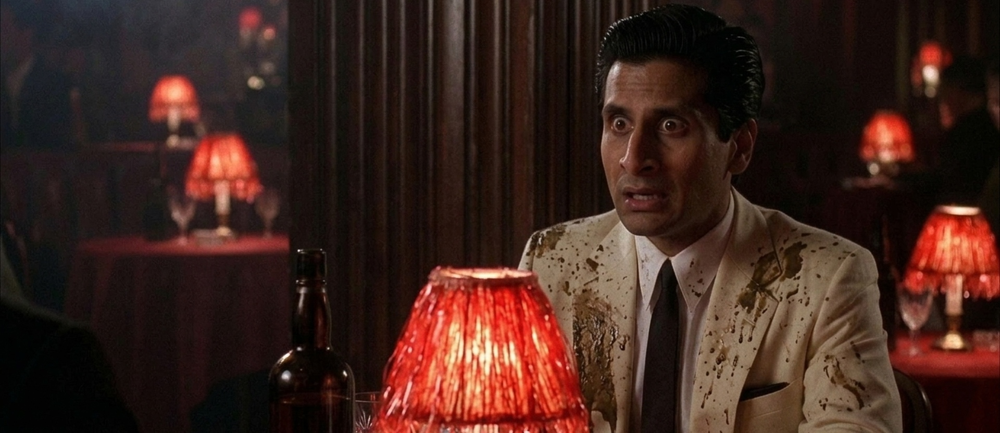

Scorsese 1970s 35mm · Tight-Cast v2.7: Deron, Ajay & Sheren · Ingredient Prep: 10 Gold-Master + Derived ECU/OTS 21:9 Keyframes + Radio-Play QA + Scorsese Dry-Act & Copacabana Finale Spotting · Render Time: 24/24 Verified Hybrid Render (22 InfiniteTalk + 2 LTX-2.5 Dev)
Original movie frames extracted directly from the scene to match camera angles, lenses, lighting contrast, and color palette.
Every locked 21:9 keyframe anchor, dialogue line, and motion directive queued for rendering.

GF2_01 · deron (9.9s)
Keyframe: gf2_master_wide.jpg
Line: "Wah, that rival bookie try pay short envelope last night lah! Me walk in back room, take cash, take whole crate off-truck oyster too—show whole neighborhood who boss, right or not?!"
Prompt: Photorealistic 1970s Scorsese 35mm Copacabana nightclub drama matching the starting frame. warm glowing red fringed table lamps, ruby velvet booth, dark lounge haze. Set context: 1970s Copacabana crimson-velvet VIP booth bathed in glowing red fringed table lamps; Deron centered-left in woven bamboo conical rice paddy hat and ornate red dragon Chinese silk robe holding crystal scotch glass; Ajay right in crisp 1970s ivory dinner jacket & dark tie; Sheren between/beside them in chic 1970s black velvet evening dress.. Use subtle organic 35mm handheld camera breathing with tiny operator micro-movements, maintaining fixed framing distance. Exact hair, hat, eyewear, costume, and set lighting preserved from the starting frame. ONLY the East Asian man wearing a woven bamboo conical rice paddy hat and ornate red dragon Chinese silk robe holding a scotch tumbler on the left of frame actively speaks with natural jaw and lip articulation synced cleanly to the dialogue: "Wah, that rival bookie try pay short envelope last night lah! Me walk in back room, take cash, take whole crate off-truck oyster too—show whole neighborhood who boss, right or not?!" maintaining stoic deadpan prestige gravity and closing mouth cleanly when dialogue finishes. Any other character visible in frame keeps their mouth completely CLOSED without speaking. Natural unhurried Hollywood performance with subtle shoulder breathing, authentic eye blinks, micro-head emphasis on stressed words, and expressive jaw articulation (never frozen, never goofy smiling). Cigar smoke wisps drift lazily across crimson fringed lamps and dim supper-club patrons shift softly in deep warm bokeh. Real human skin pores, authentic Eastman 5296 tungsten 35mm film grain.
GF2_02 · fx (3.7s)
Keyframe: gf2_master_wide.jpg
Line: ""
Prompt: Photorealistic 1970s Scorsese 35mm Copacabana nightclub drama matching the starting frame. Static lock-off Copacabana VIP booth hold matching the starting frame: warm red fringed table lamp glows softly while Deron sits stone-faced and grim beneath his conical bamboo hat & red dragon silk robe suppressing a violent stomach cramp with closed unsmiling lips; Sheren watches calmly with cold, worried, unsmiling eyes and closed lips; Ajay glances sideways nervously with closed lips and ZERO smiling. Every person in the booth maintains strict deadpan composure with closed mouths and zero smiles, zero smirks, and zero laughter. Use static lock-off camera mounted on a heavy tripod, completely stationary framing. Real human skin pores, authentic Eastman 5296 tungsten 35mm film grain.

GF2_03 · ajay (8.2s)
Keyframe: gf2_master_ajay.jpg
Line: "Arre baap re, Deron! What timing, yaar! Big tough gangster stomach making sound like my nineteen-eighty-four Porsche gearbox! You are total funny guy, yaar!"
Prompt: Photorealistic 1970s Scorsese 35mm Copacabana nightclub drama matching the starting frame. warm glowing red fringed table lamps, ruby velvet booth, dark lounge haze. Set context: Henry Hill MCU on Ajay wearing 1970s ivory/cream mob dinner jacket, white dress shirt, dark tie, slicked hair under smoky crimson Copa club lighting.. Use subtle organic 35mm handheld camera breathing with tiny operator micro-movements, maintaining fixed framing distance. Exact hair, hat, eyewear, costume, and set lighting preserved from the starting frame. ONLY the Indian-American man with slicked dark hair wearing a crisp 1970s ivory dinner jacket, white shirt, and dark silk tie in frame actively speaks with natural jaw and lip articulation synced cleanly to the dialogue: "Arre baap re, Deron! What timing, yaar! Big tough gangster stomach making sound like my nineteen-eighty-four Porsche gearbox! You are total funny guy, yaar!" maintaining stoic deadpan prestige gravity and closing mouth cleanly when dialogue finishes. Any other character visible in frame keeps their mouth completely CLOSED without speaking. Natural unhurried Hollywood performance with subtle shoulder breathing, authentic eye blinks, micro-head emphasis on stressed words, and expressive jaw articulation (never frozen, never goofy smiling). Cigar smoke wisps drift lazily across crimson fringed lamps and dim supper-club patrons shift softly in deep warm bokeh. Real human skin pores, authentic Eastman 5296 tungsten 35mm film grain.

GF2_04 · sheren (3.4s)
Keyframe: gf2_master_sheren.jpg
Line: "Ajay. Stop talking. Right now."
Prompt: Photorealistic 1970s Scorsese 35mm Copacabana nightclub drama matching the starting frame. warm glowing red fringed table lamps, ruby velvet booth, dark lounge haze. Set context: MCU on Sheren wearing chic 1970s black velvet nightclub evening dress and gold earrings beside red fringed Copa lamp.. Use static lock-off camera mounted on a heavy tripod, completely stationary framing. Exact hair, hat, eyewear, costume, and set lighting preserved from the starting frame. ONLY the dark-haired woman in a chic 1970s black velvet evening dress and gold earrings in frame actively speaks with natural jaw and lip articulation synced cleanly to the dialogue: "Ajay. Stop talking. Right now." maintaining stoic deadpan prestige gravity and closing mouth cleanly when dialogue finishes. Any other character visible in frame keeps their mouth completely CLOSED without speaking. Natural unhurried Hollywood performance with subtle shoulder breathing, authentic eye blinks, micro-head emphasis on stressed words, and expressive jaw articulation (never frozen, never goofy smiling). Cigar smoke wisps drift lazily across crimson fringed lamps and dim supper-club patrons shift softly in deep warm bokeh. Real human skin pores, authentic Eastman 5296 tungsten 35mm film grain.

GF2_05 · deron (0.9s)
Keyframe: gf2_deron_ecu.jpg
Line: "Funny how lah?"
Prompt: Photorealistic 1970s Scorsese 35mm Copacabana nightclub drama matching the starting frame. warm glowing red fringed table lamps, ruby velvet booth, dark lounge haze. Set context: Crimson-lit Tommy DeVito MCU on Deron wearing woven bamboo conical rice paddy hat (generous headroom above cone tip) and ornate red dragon Chinese silk robe, holding crystal scotch glass under warm red club lamp.. Use static lock-off camera mounted on a heavy tripod, completely stationary framing. Exact hair, hat, eyewear, costume, and set lighting preserved from the starting frame. ONLY the East Asian man wearing a woven bamboo conical rice paddy hat and ornate red dragon Chinese silk robe holding a scotch tumbler in frame actively speaks with clear deliberate mouth articulation pronouncing 'Funny how lah?' unmistakably synced cleanly to the dialogue: "Funny how lah?" maintaining stoic deadpan prestige gravity and closing mouth cleanly when dialogue finishes. Any other character visible in frame keeps their mouth completely CLOSED without speaking. Natural unhurried Hollywood performance with subtle shoulder breathing, authentic eye blinks, micro-head emphasis on stressed words, and expressive jaw articulation (never frozen, never goofy smiling). Shallow f/1.8 anamorphic focus isolating razor-sharp skin pores and eyes over creamy background bokeh. Slow imperceptible cinema push-in heightening dramatic gravity. Cigar smoke wisps drift lazily across crimson fringed lamps and dim supper-club patrons shift softly in deep warm bokeh. Real human skin pores, authentic Eastman 5296 tungsten 35mm film grain.
GF2_06 · ajay (7.4s)
Keyframe: gf2_master_ajay.jpg
Line: "Simply—you know what I am saying, yaar! Big shakedown story, then stomach goes boom—it is total amazing comedy, Deron!"
Prompt: Photorealistic 1970s Scorsese 35mm Copacabana nightclub drama matching the starting frame. warm glowing red fringed table lamps, ruby velvet booth, dark lounge haze. Set context: Henry Hill MCU on Ajay wearing 1970s ivory/cream mob dinner jacket, white dress shirt, dark tie, slicked hair under smoky crimson Copa club lighting.. Use subtle organic 35mm handheld camera breathing with tiny operator micro-movements, maintaining fixed framing distance. Exact hair, hat, eyewear, costume, and set lighting preserved from the starting frame. ONLY the Indian-American man with slicked dark hair wearing a crisp 1970s ivory dinner jacket, white shirt, and dark silk tie in frame actively speaks with natural jaw and lip articulation synced cleanly to the dialogue: "Simply—you know what I am saying, yaar! Big shakedown story, then stomach goes boom—it is total amazing comedy, Deron!" maintaining stoic deadpan prestige gravity and closing mouth cleanly when dialogue finishes. Any other character visible in frame keeps their mouth completely CLOSED without speaking. Natural unhurried Hollywood performance with subtle shoulder breathing, authentic eye blinks, micro-head emphasis on stressed words, and expressive jaw articulation (never frozen, never goofy smiling). Cigar smoke wisps drift lazily across crimson fringed lamps and dim supper-club patrons shift softly in deep warm bokeh. Real human skin pores, authentic Eastman 5296 tungsten 35mm film grain.

GF2_07 · deron (7.5s)
Keyframe: gf2_master_deron.jpg
Line: "No, no, me no know. You say funny two time. How me funny ah? Me look like circus clown sit here entertain you while you drink scotch, right or not?"
Prompt: Photorealistic 1970s Scorsese 35mm Copacabana nightclub drama matching the starting frame. warm glowing red fringed table lamps, ruby velvet booth, dark lounge haze. Set context: Crimson-lit Tommy DeVito MCU on Deron wearing woven bamboo conical rice paddy hat (generous headroom above cone tip) and ornate red dragon Chinese silk robe, holding crystal scotch glass under warm red club lamp.. Use static lock-off camera mounted on a heavy tripod, completely stationary framing. Exact hair, hat, eyewear, costume, and set lighting preserved from the starting frame. ONLY the East Asian man wearing a woven bamboo conical rice paddy hat and ornate red dragon Chinese silk robe holding a scotch tumbler in frame actively speaks with natural jaw and lip articulation synced cleanly to the dialogue: "No, no, me no know. You say funny two time. How me funny ah? Me look like circus clown sit here entertain you while you drink scotch, right or not?" maintaining stoic deadpan prestige gravity and closing mouth cleanly when dialogue finishes. Any other character visible in frame keeps their mouth completely CLOSED without speaking. Natural unhurried Hollywood performance with subtle shoulder breathing, authentic eye blinks, micro-head emphasis on stressed words, and expressive jaw articulation (never frozen, never goofy smiling). Cigar smoke wisps drift lazily across crimson fringed lamps and dim supper-club patrons shift softly in deep warm bokeh. Real human skin pores, authentic Eastman 5296 tungsten 35mm film grain.
GF2_08 · sheren (4.5s)
Keyframe: gf2_master_sheren.jpg
Line: "Yikes. You just walked straight into a code red, Ajay."
Prompt: Photorealistic 1970s Scorsese 35mm Copacabana nightclub drama matching the starting frame. warm glowing red fringed table lamps, ruby velvet booth, dark lounge haze. Set context: MCU on Sheren wearing chic 1970s black velvet nightclub evening dress and gold earrings beside red fringed Copa lamp.. Use static lock-off camera mounted on a heavy tripod, completely stationary framing. Exact hair, hat, eyewear, costume, and set lighting preserved from the starting frame. ONLY the dark-haired woman in a chic 1970s black velvet evening dress and gold earrings in frame actively speaks with natural jaw and lip articulation synced cleanly to the dialogue: "Yikes. You just walked straight into a code red, Ajay." maintaining stoic deadpan prestige gravity and closing mouth cleanly when dialogue finishes. Any other character visible in frame keeps their mouth completely CLOSED without speaking. Natural unhurried Hollywood performance with subtle shoulder breathing, authentic eye blinks, micro-head emphasis on stressed words, and expressive jaw articulation (never frozen, never goofy smiling). Cigar smoke wisps drift lazily across crimson fringed lamps and dim supper-club patrons shift softly in deep warm bokeh. Real human skin pores, authentic Eastman 5296 tungsten 35mm film grain.

GF2_09 · ajay (9.4s)
Keyframe: gf2_ajay_ots.jpg
Line: "Negative, Deron! No clown, yaar! Please—I am saying you are eating bad hijacked oyster and sitting so straight like mafia don—it is simply amusing!"
Prompt: Photorealistic 1970s Scorsese 35mm Copacabana nightclub drama matching the starting frame. warm glowing red fringed table lamps, ruby velvet booth, dark lounge haze. Set context: Henry Hill MCU on Ajay wearing 1970s ivory/cream mob dinner jacket, white dress shirt, dark tie, slicked hair under smoky crimson Copa club lighting.. Use subtle organic 35mm handheld camera breathing with tiny operator micro-movements, maintaining fixed framing distance. Exact hair, hat, eyewear, costume, and set lighting preserved from the starting frame. ONLY the Indian-American man with slicked dark hair wearing a crisp 1970s ivory dinner jacket, white shirt, and dark silk tie in frame actively speaks with natural jaw and lip articulation synced cleanly to the dialogue: "Negative, Deron! No clown, yaar! Please—I am saying you are eating bad hijacked oyster and sitting so straight like mafia don—it is simply amusing!" maintaining stoic deadpan prestige gravity and closing mouth cleanly when dialogue finishes. Any other character visible in frame keeps their mouth completely CLOSED without speaking. Natural unhurried Hollywood performance with subtle shoulder breathing, authentic eye blinks, micro-head emphasis on stressed words, and expressive jaw articulation (never frozen, never goofy smiling). Natural over-the-shoulder f/2.2 cinema rack depth keeping foreground shoulder silhouette softly blurred while speaker stays razor-sharp. Cigar smoke wisps drift lazily across crimson fringed lamps and dim supper-club patrons shift softly in deep warm bokeh. Real human skin pores, authentic Eastman 5296 tungsten 35mm film grain.
GF2_10 · deron (6.7s)
Keyframe: gf2_deron_ecu.jpg
Line: "Amusing ah?! Whole room owe me money, half Brooklyn scared look at red dragon robe, and you think boss stomach is big joke lah?!"
Prompt: Photorealistic 1970s Scorsese 35mm Copacabana nightclub drama matching the starting frame. warm glowing red fringed table lamps, ruby velvet booth, dark lounge haze. Set context: Crimson-lit Tommy DeVito MCU on Deron wearing woven bamboo conical rice paddy hat (generous headroom above cone tip) and ornate red dragon Chinese silk robe, holding crystal scotch glass under warm red club lamp.. Use measured slow linear dolly push-in along fixed axis on weighted rails. Exact hair, hat, eyewear, costume, and set lighting preserved from the starting frame. ONLY the East Asian man wearing a woven bamboo conical rice paddy hat and ornate red dragon Chinese silk robe holding a scotch tumbler in frame actively speaks with natural jaw and lip articulation synced cleanly to the dialogue: "Amusing ah?! Whole room owe me money, half Brooklyn scared look at red dragon robe, and you think boss stomach is big joke lah?!" maintaining stoic deadpan prestige gravity and closing mouth cleanly when dialogue finishes. Any other character visible in frame keeps their mouth completely CLOSED without speaking. Natural unhurried Hollywood performance with subtle shoulder breathing, authentic eye blinks, micro-head emphasis on stressed words, and expressive jaw articulation (never frozen, never goofy smiling). Shallow f/1.8 anamorphic focus isolating razor-sharp skin pores and eyes over creamy background bokeh. Slow imperceptible cinema push-in heightening dramatic gravity. Cigar smoke wisps drift lazily across crimson fringed lamps and dim supper-club patrons shift softly in deep warm bokeh. Real human skin pores, authentic Eastman 5296 tungsten 35mm film grain.
GF2_11 · ajay (8.5s)
Keyframe: gf2_ajay_ots.jpg
Line: "Arre baap re, Deron, look at your face—it is completely grey! Your bowel sounds are total hyperactive—please do the needful and go restroom fast fast!"
Prompt: Photorealistic 1970s Scorsese 35mm Copacabana nightclub drama matching the starting frame. warm glowing red fringed table lamps, ruby velvet booth, dark lounge haze. Set context: Henry Hill MCU on Ajay wearing 1970s ivory/cream mob dinner jacket, white dress shirt, dark tie, slicked hair under smoky crimson Copa club lighting.. Use static lock-off camera mounted on a heavy tripod, completely stationary framing. Exact hair, hat, eyewear, costume, and set lighting preserved from the starting frame. ONLY the Indian-American man with slicked dark hair wearing a crisp 1970s ivory dinner jacket, white shirt, and dark silk tie in frame actively speaks with natural jaw and lip articulation synced cleanly to the dialogue: "Arre baap re, Deron, look at your face—it is completely grey! Your bowel sounds are total hyperactive—please do the needful and go restroom fast fast!" maintaining stoic deadpan prestige gravity and closing mouth cleanly when dialogue finishes. Any other character visible in frame keeps their mouth completely CLOSED without speaking. Natural unhurried Hollywood performance with subtle shoulder breathing, authentic eye blinks, micro-head emphasis on stressed words, and expressive jaw articulation (never frozen, never goofy smiling). Natural over-the-shoulder f/2.2 cinema rack depth keeping foreground shoulder silhouette softly blurred while speaker stays razor-sharp. Cigar smoke wisps drift lazily across crimson fringed lamps and dim supper-club patrons shift softly in deep warm bokeh. Real human skin pores, authentic Eastman 5296 tungsten 35mm film grain.
GF2_12 · deron (7.2s)
Keyframe: gf2_master_deron.jpg
Line: "Boss no run to toilet in front of whole Copacabana, lah! Nobody leave table until me say finish! Now tell me again—how me funny?!"
Prompt: Photorealistic 1970s Scorsese 35mm Copacabana nightclub drama matching the starting frame. warm glowing red fringed table lamps, ruby velvet booth, dark lounge haze. Set context: Crimson-lit Tommy DeVito MCU on Deron wearing woven bamboo conical rice paddy hat (generous headroom above cone tip) and ornate red dragon Chinese silk robe, holding crystal scotch glass under warm red club lamp.. Use static lock-off camera mounted on a heavy tripod, completely stationary framing. Exact hair, hat, eyewear, costume, and set lighting preserved from the starting frame. ONLY the East Asian man wearing a woven bamboo conical rice paddy hat and ornate red dragon Chinese silk robe holding a scotch tumbler in frame actively speaks with natural jaw and lip articulation synced cleanly to the dialogue: "Boss no run to toilet in front of whole Copacabana, lah! Nobody leave table until me say finish! Now tell me again—how me funny?!" maintaining stoic deadpan prestige gravity and closing mouth cleanly when dialogue finishes. Any other character visible in frame keeps their mouth completely CLOSED without speaking. Natural unhurried Hollywood performance with subtle shoulder breathing, authentic eye blinks, micro-head emphasis on stressed words, and expressive jaw articulation (never frozen, never goofy smiling). Cigar smoke wisps drift lazily across crimson fringed lamps and dim supper-club patrons shift softly in deep warm bokeh. Real human skin pores, authentic Eastman 5296 tungsten 35mm film grain.

GF2_13 · sheren (6.2s)
Keyframe: gf2_sheren_tight.jpg
Line: "Relax, Ajay. Don't look at his eyes, and definitely don't sit directly in front of him."
Prompt: Photorealistic 1970s Scorsese 35mm Copacabana nightclub drama matching the starting frame. warm glowing red fringed table lamps, ruby velvet booth, dark lounge haze. Set context: MCU on Sheren wearing chic 1970s black velvet nightclub evening dress and gold earrings beside red fringed Copa lamp.. Use static lock-off camera mounted on a heavy tripod, completely stationary framing. Exact hair, hat, eyewear, costume, and set lighting preserved from the starting frame. ONLY the dark-haired woman in a chic 1970s black velvet evening dress and gold earrings in frame actively speaks with natural jaw and lip articulation synced cleanly to the dialogue: "Relax, Ajay. Don't look at his eyes, and definitely don't sit directly in front of him." maintaining stoic deadpan prestige gravity and closing mouth cleanly when dialogue finishes. Any other character visible in frame keeps their mouth completely CLOSED without speaking. Natural unhurried Hollywood performance with subtle shoulder breathing, authentic eye blinks, micro-head emphasis on stressed words, and expressive jaw articulation (never frozen, never goofy smiling). Shallow f/1.8 anamorphic focus isolating razor-sharp skin pores and eyes over creamy background bokeh. Cigar smoke wisps drift lazily across crimson fringed lamps and dim supper-club patrons shift softly in deep warm bokeh. Real human skin pores, authentic Eastman 5296 tungsten 35mm film grain.
GF2_14 · deron (5.4s)
Keyframe: gf2_master_deron.jpg
Line: "You smart doctor, yaar? Big brain surgeon? Explain to whole table right now what so funny about me!"
Prompt: Photorealistic 1970s Scorsese 35mm Copacabana nightclub drama matching the starting frame. warm glowing red fringed table lamps, ruby velvet booth, dark lounge haze. Set context: Crimson-lit Tommy DeVito MCU on Deron wearing woven bamboo conical rice paddy hat (generous headroom above cone tip) and ornate red dragon Chinese silk robe, holding crystal scotch glass under warm red club lamp.. Use static lock-off camera mounted on a heavy tripod, completely stationary framing. Exact hair, hat, eyewear, costume, and set lighting preserved from the starting frame. ONLY the East Asian man wearing a woven bamboo conical rice paddy hat and ornate red dragon Chinese silk robe holding a scotch tumbler in frame actively speaks with natural jaw and lip articulation synced cleanly to the dialogue: "You smart doctor, yaar? Big brain surgeon? Explain to whole table right now what so funny about me!" maintaining stoic deadpan prestige gravity and closing mouth cleanly when dialogue finishes. Any other character visible in frame keeps their mouth completely CLOSED without speaking. Natural unhurried Hollywood performance with subtle shoulder breathing, authentic eye blinks, micro-head emphasis on stressed words, and expressive jaw articulation (never frozen, never goofy smiling). Cigar smoke wisps drift lazily across crimson fringed lamps and dim supper-club patrons shift softly in deep warm bokeh. Real human skin pores, authentic Eastman 5296 tungsten 35mm film grain.
GF2_15 · ajay (7.5s)
Keyframe: gf2_ajay_ots.jpg
Line: "Nothing is funny, Deron! Zero percent funny! This is a totally serious gangster stomach emergency and I made massive mistake!"
Prompt: Photorealistic 1970s Scorsese 35mm Copacabana nightclub drama matching the starting frame. warm glowing red fringed table lamps, ruby velvet booth, dark lounge haze. Set context: Henry Hill MCU on Ajay wearing 1970s ivory/cream mob dinner jacket, white dress shirt, dark tie, slicked hair under smoky crimson Copa club lighting.. Use static lock-off camera mounted on a heavy tripod, completely stationary framing. Exact hair, hat, eyewear, costume, and set lighting preserved from the starting frame. ONLY the Indian-American man with slicked dark hair wearing a crisp 1970s ivory dinner jacket, white shirt, and dark silk tie in frame actively speaks with natural jaw and lip articulation synced cleanly to the dialogue: "Nothing is funny, Deron! Zero percent funny! This is a totally serious gangster stomach emergency and I made massive mistake!" maintaining stoic deadpan prestige gravity and closing mouth cleanly when dialogue finishes. Any other character visible in frame keeps their mouth completely CLOSED without speaking. Natural unhurried Hollywood performance with subtle shoulder breathing, authentic eye blinks, micro-head emphasis on stressed words, and expressive jaw articulation (never frozen, never goofy smiling). Natural over-the-shoulder f/2.2 cinema rack depth keeping foreground shoulder silhouette softly blurred while speaker stays razor-sharp. Cigar smoke wisps drift lazily across crimson fringed lamps and dim supper-club patrons shift softly in deep warm bokeh. Real human skin pores, authentic Eastman 5296 tungsten 35mm film grain.
GF2_16 · deron (1.0s)
Keyframe: gf2_deron_ecu.jpg
Line: "...Massive mistake."
Prompt: Photorealistic 1970s Scorsese 35mm Copacabana nightclub drama matching the starting frame. warm glowing red fringed table lamps, ruby velvet booth, dark lounge haze. Set context: Crimson-lit Tommy DeVito MCU on Deron wearing woven bamboo conical rice paddy hat (generous headroom above cone tip) and ornate red dragon Chinese silk robe, holding crystal scotch glass under warm red club lamp.. Use static lock-off camera mounted on a heavy tripod, completely stationary framing. Exact hair, hat, eyewear, costume, and set lighting preserved from the starting frame. ONLY the East Asian man wearing a woven bamboo conical rice paddy hat and ornate red dragon Chinese silk robe holding a scotch tumbler in frame actively speaks with natural jaw and lip articulation synced cleanly to the dialogue: "...Massive mistake." maintaining stoic deadpan prestige gravity and closing mouth cleanly when dialogue finishes. Any other character visible in frame keeps their mouth completely CLOSED without speaking. Natural unhurried Hollywood performance with subtle shoulder breathing, authentic eye blinks, micro-head emphasis on stressed words, and expressive jaw articulation (never frozen, never goofy smiling). Shallow f/1.8 anamorphic focus isolating razor-sharp skin pores and eyes over creamy background bokeh. Slow imperceptible cinema push-in heightening dramatic gravity. Cigar smoke wisps drift lazily across crimson fringed lamps and dim supper-club patrons shift softly in deep warm bokeh. Real human skin pores, authentic Eastman 5296 tungsten 35mm film grain.
GF2_17 · ajay (3.7s)
Keyframe: gf2_ajay_ots.jpg
Line: "Yes, boss. Very massive mistake. Please, Deron—just stand up slow slow."
Prompt: Photorealistic 1970s Scorsese 35mm Copacabana nightclub drama matching the starting frame. warm glowing red fringed table lamps, ruby velvet booth, dark lounge haze. Set context: Henry Hill MCU on Ajay wearing 1970s ivory/cream mob dinner jacket, white dress shirt, dark tie, slicked hair under smoky crimson Copa club lighting.. Use static lock-off camera mounted on a heavy tripod, completely stationary framing. Exact hair, hat, eyewear, costume, and set lighting preserved from the starting frame. ONLY the Indian-American man with slicked dark hair wearing a crisp 1970s ivory dinner jacket, white shirt, and dark silk tie in frame actively speaks with natural jaw and lip articulation synced cleanly to the dialogue: "Yes, boss. Very massive mistake. Please, Deron—just stand up slow slow." maintaining stoic deadpan prestige gravity and closing mouth cleanly when dialogue finishes. Any other character visible in frame keeps their mouth completely CLOSED without speaking. Natural unhurried Hollywood performance with subtle shoulder breathing, authentic eye blinks, micro-head emphasis on stressed words, and expressive jaw articulation (never frozen, never goofy smiling). Natural over-the-shoulder f/2.2 cinema rack depth keeping foreground shoulder silhouette softly blurred while speaker stays razor-sharp. Cigar smoke wisps drift lazily across crimson fringed lamps and dim supper-club patrons shift softly in deep warm bokeh. Real human skin pores, authentic Eastman 5296 tungsten 35mm film grain.
GF2_18 · deron (1.2s)
Keyframe: gf2_deron_ecu.jpg
Line: "Me no stand up."
Prompt: Photorealistic 1970s Scorsese 35mm Copacabana nightclub drama matching the starting frame. warm glowing red fringed table lamps, ruby velvet booth, dark lounge haze. Set context: Crimson-lit Tommy DeVito MCU on Deron wearing woven bamboo conical rice paddy hat (generous headroom above cone tip) and ornate red dragon Chinese silk robe, holding crystal scotch glass under warm red club lamp.. Use static lock-off camera mounted on a heavy tripod, completely stationary framing. Exact hair, hat, eyewear, costume, and set lighting preserved from the starting frame. ONLY the East Asian man wearing a woven bamboo conical rice paddy hat and ornate red dragon Chinese silk robe holding a scotch tumbler in frame actively speaks with natural jaw and lip articulation synced cleanly to the dialogue: "Me no stand up." maintaining stoic deadpan prestige gravity and closing mouth cleanly when dialogue finishes. Any other character visible in frame keeps their mouth completely CLOSED without speaking. Natural unhurried Hollywood performance with subtle shoulder breathing, authentic eye blinks, micro-head emphasis on stressed words, and expressive jaw articulation (never frozen, never goofy smiling). Shallow f/1.8 anamorphic focus isolating razor-sharp skin pores and eyes over creamy background bokeh. Cigar smoke wisps drift lazily across crimson fringed lamps and dim supper-club patrons shift softly in deep warm bokeh. Real human skin pores, authentic Eastman 5296 tungsten 35mm film grain.
GF2_19 · fx (4.0s)
Keyframe: gf2_master_wide.jpg
Line: ""
Prompt: Photorealistic 1970s Scorsese 35mm Copacabana nightclub drama matching the starting frame. Static lock-off Copacabana VIP booth practical-FX shot matching the starting frame: frame 1 begins completely clean inside the crimson booth, then Deron holds icy unblinking stone-cold glare beneath his conical bamboo hat and red dragon robe as a violent pressurized torrent of disgusting thick dark-brown diarrhea erupts upward from underneath Deron's left side of the crimson tablecloth, blasting across the lower tablecloth, table lamp base, whiskey decanter, and splashing onto Ajay's ivory sleeves and lapels as Ajay recoils in horror and Sheren freezes with a silent wide-eyed gasp. Use static lock-off camera mounted on a heavy tripod, completely stationary framing. Real human skin pores, authentic Eastman 5296 tungsten 35mm film grain.

GF2_20 · ajay (4.7s)
Keyframe: gf2_ajay_post.jpg
Line: "Arre baap re... my white tuxedo trousers, yaar! You really did not leave the table!"
Prompt: Photorealistic 1970s Scorsese 35mm Copacabana nightclub drama matching the starting frame. warm glowing red fringed table lamps, ruby velvet booth, dark lounge haze. Set context: Edited from GF2_AJAY: stunned, wide-eyed Ajay with brown splatters on his ivory dinner jacket lapel in silent frozen Copa club lighting.. Use subtle organic 35mm handheld camera breathing with tiny operator micro-movements, maintaining fixed framing distance. Exact hair, hat, eyewear, costume, and set lighting preserved from the starting frame. ONLY the Indian-American man with slicked dark hair wearing a crisp 1970s ivory dinner jacket, white shirt, and dark silk tie in frame actively speaks with natural jaw and lip articulation synced cleanly to the dialogue: "Arre baap re... my white tuxedo trousers, yaar! You really did not leave the table!" maintaining stoic deadpan prestige gravity and closing mouth cleanly when dialogue finishes. Any other character visible in frame keeps their mouth completely CLOSED without speaking. Natural unhurried Hollywood performance with subtle shoulder breathing, authentic eye blinks, micro-head emphasis on stressed words, and expressive jaw articulation (never frozen, never goofy smiling). Cigar smoke wisps drift lazily across crimson fringed lamps and dim supper-club patrons shift softly in deep warm bokeh. Real human skin pores, authentic Eastman 5296 tungsten 35mm film grain.
GF2_21 · sheren (3.0s)
Keyframe: gf2_sheren_tight.jpg
Line: "Obviously. He never bluffs."
Prompt: Photorealistic 1970s Scorsese 35mm Copacabana nightclub drama matching the starting frame. warm glowing red fringed table lamps, ruby velvet booth, dark lounge haze. Set context: MCU on Sheren wearing chic 1970s black velvet nightclub evening dress and gold earrings beside red fringed Copa lamp.. Use static lock-off camera mounted on a heavy tripod, completely stationary framing. Exact hair, hat, eyewear, costume, and set lighting preserved from the starting frame. ONLY the dark-haired woman in a chic 1970s black velvet evening dress and gold earrings in frame actively speaks with natural jaw and lip articulation synced cleanly to the dialogue: "Obviously. He never bluffs." maintaining stoic deadpan prestige gravity and closing mouth cleanly when dialogue finishes. Any other character visible in frame keeps their mouth completely CLOSED without speaking. Natural unhurried Hollywood performance with subtle shoulder breathing, authentic eye blinks, micro-head emphasis on stressed words, and expressive jaw articulation (never frozen, never goofy smiling). Shallow f/1.8 anamorphic focus isolating razor-sharp skin pores and eyes over creamy background bokeh. Cigar smoke wisps drift lazily across crimson fringed lamps and dim supper-club patrons shift softly in deep warm bokeh. Real human skin pores, authentic Eastman 5296 tungsten 35mm film grain.
GF2_22 · deron (3.7s)
Keyframe: gf2_master_deron.jpg
Line: "See? Very serious business lah. Nobody laugh now, right or not?"
Prompt: Photorealistic 1970s Scorsese 35mm Copacabana nightclub drama matching the starting frame. warm glowing red fringed table lamps, ruby velvet booth, dark lounge haze. Set context: Crimson-lit Tommy DeVito MCU on Deron wearing woven bamboo conical rice paddy hat (generous headroom above cone tip) and ornate red dragon Chinese silk robe, holding crystal scotch glass under warm red club lamp.. Use static lock-off camera mounted on a heavy tripod, completely stationary framing. Exact hair, hat, eyewear, costume, and set lighting preserved from the starting frame. ONLY the East Asian man wearing a woven bamboo conical rice paddy hat and ornate red dragon Chinese silk robe holding a scotch tumbler in frame actively speaks with natural jaw and lip articulation synced cleanly to the dialogue: "See? Very serious business lah. Nobody laugh now, right or not?" maintaining stoic deadpan prestige gravity and closing mouth cleanly when dialogue finishes. Any other character visible in frame keeps their mouth completely CLOSED without speaking. Natural unhurried Hollywood performance with subtle shoulder breathing, authentic eye blinks, micro-head emphasis on stressed words, and expressive jaw articulation (never frozen, never goofy smiling). Cigar smoke wisps drift lazily across crimson fringed lamps and dim supper-club patrons shift softly in deep warm bokeh. Real human skin pores, authentic Eastman 5296 tungsten 35mm film grain.
GF2_23 · deron (5.9s)
Keyframe: gf2_master_deron.jpg
Line: "Now you pay dinner bill, pay carpet guy, and nobody say one word outside Copacabana, understand ah?"
Prompt: Photorealistic 1970s Scorsese 35mm Copacabana nightclub drama matching the starting frame. warm glowing red fringed table lamps, ruby velvet booth, dark lounge haze. Set context: Crimson-lit Tommy DeVito MCU on Deron wearing woven bamboo conical rice paddy hat (generous headroom above cone tip) and ornate red dragon Chinese silk robe, holding crystal scotch glass under warm red club lamp.. Use static lock-off camera mounted on a heavy tripod, completely stationary framing. Exact hair, hat, eyewear, costume, and set lighting preserved from the starting frame. ONLY the East Asian man wearing a woven bamboo conical rice paddy hat and ornate red dragon Chinese silk robe holding a scotch tumbler in frame actively speaks with natural jaw and lip articulation synced cleanly to the dialogue: "Now you pay dinner bill, pay carpet guy, and nobody say one word outside Copacabana, understand ah?" maintaining stoic deadpan prestige gravity and closing mouth cleanly when dialogue finishes. Any other character visible in frame keeps their mouth completely CLOSED without speaking. Natural unhurried Hollywood performance with subtle shoulder breathing, authentic eye blinks, micro-head emphasis on stressed words, and expressive jaw articulation (never frozen, never goofy smiling). Cigar smoke wisps drift lazily across crimson fringed lamps and dim supper-club patrons shift softly in deep warm bokeh. Real human skin pores, authentic Eastman 5296 tungsten 35mm film grain.
GF2_24 · sheren (4.5s)
Keyframe: gf2_sheren_tight.jpg
Line: "Bring two more scotches and a mop. And put the dry cleaning on his tab."
Prompt: Photorealistic 1970s Scorsese 35mm Copacabana nightclub drama matching the starting frame. warm glowing red fringed table lamps, ruby velvet booth, dark lounge haze. Set context: MCU on Sheren wearing chic 1970s black velvet nightclub evening dress and gold earrings beside red fringed Copa lamp.. Use static lock-off camera mounted on a heavy tripod, completely stationary framing. Exact hair, hat, eyewear, costume, and set lighting preserved from the starting frame. ONLY the dark-haired woman in a chic 1970s black velvet evening dress and gold earrings in frame actively speaks with natural jaw and lip articulation synced cleanly to the dialogue: "Bring two more scotches and a mop. And put the dry cleaning on his tab." maintaining stoic deadpan prestige gravity and closing mouth cleanly when dialogue finishes. Any other character visible in frame keeps their mouth completely CLOSED without speaking. Natural unhurried Hollywood performance with subtle shoulder breathing, authentic eye blinks, micro-head emphasis on stressed words, and expressive jaw articulation (never frozen, never goofy smiling). Shallow f/1.8 anamorphic focus isolating razor-sharp skin pores and eyes over creamy background bokeh. Cigar smoke wisps drift lazily across crimson fringed lamps and dim supper-club patrons shift softly in deep warm bokeh. Real human skin pores, authentic Eastman 5296 tungsten 35mm film grain.